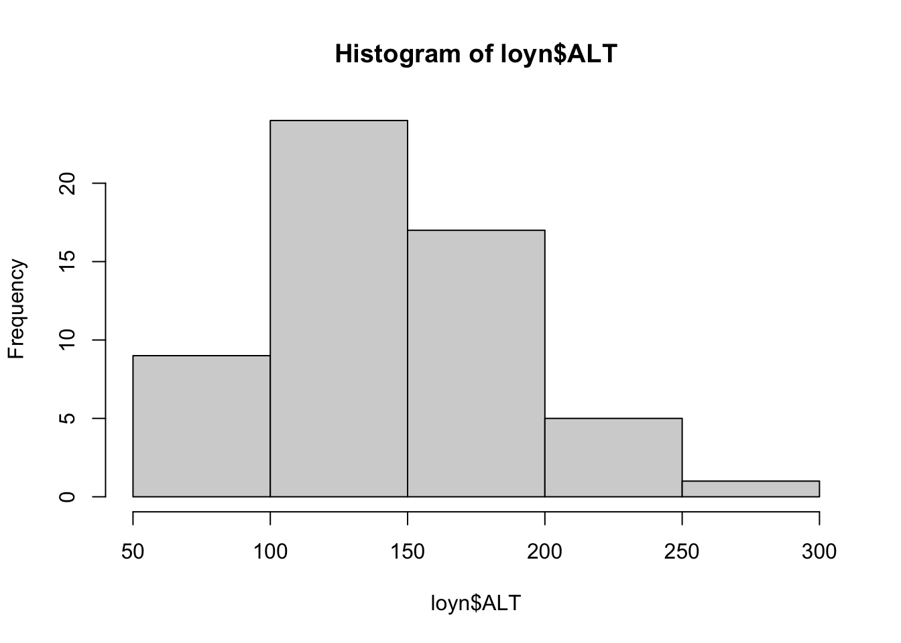
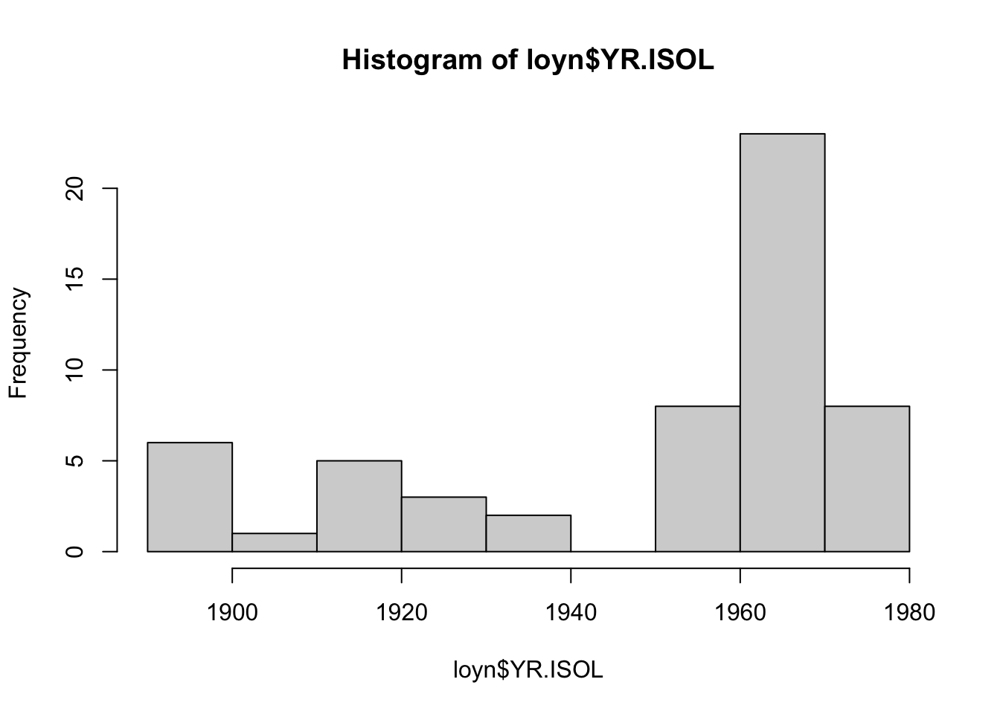
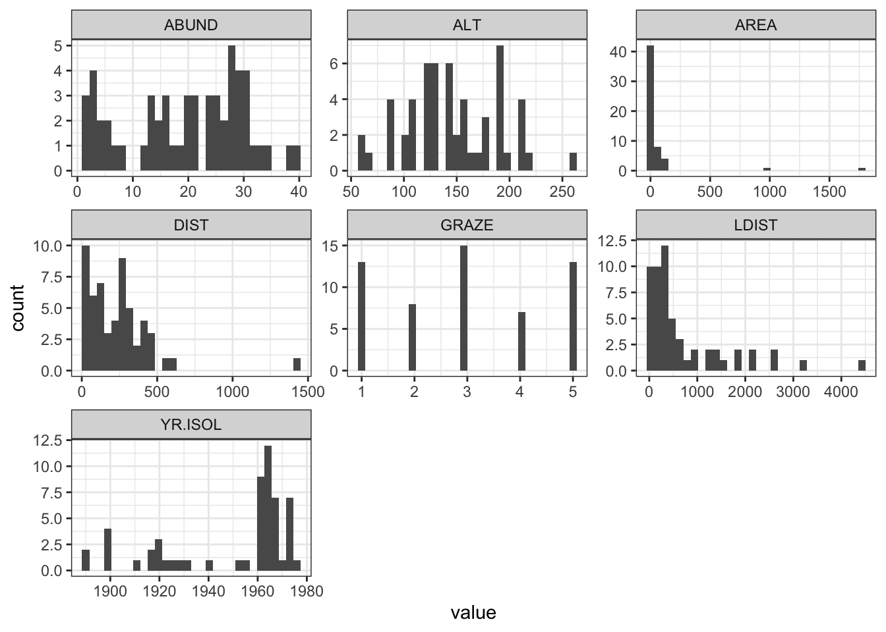
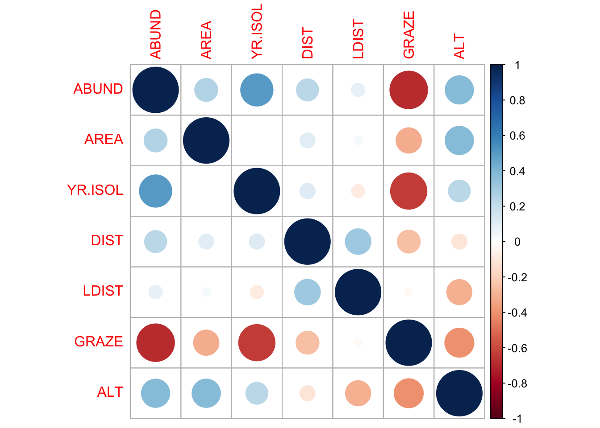

library(readxl)
loyn <- read_xlsx("data/mlr.xlsx", "Loyn")Tutorial 07
ENVX2001 – Applied Statistical Methods
1 Bird abundance
This is the same dataset used in the lecture.
Fragmentation of forest habitat has an impact of wildlife abundance. This study looked at the relationship between bird abundance (bird ha-1) and the characteristics of forest patches at 56 locations in SE Victoria.
The predictor variables are:
ALTAltitude (m)YR.ISOLYear when the patch was isolated (years)GRAZEGrazing (coded 1-5 which is light to heavy)AREAPatch area (ha)DISTDistance to nearest patch (km)LDISTDistance to largest patch (km)
Import the data from the “Loyn” tab in the MS Excel file.
Often, the first step in model development is to examine the data. This is a good way to get a feel for the data and to identify any issues that may need to be addressed. In this case, we will examine the data using histograms and a correlation matrix.
Histograms
There are a breadth of ways to create histograms in R. In each tab below you will find some different ways to create the same plot outputs.
This is a straightforward way to create multiple histograms with hist(). The par() function is used to arrange the plots on the page. The mfrow argument specifies the number of rows and columns of plots.
# par(mfrow=c(3,3))
hist(loyn$ABUND)
hist(loyn$ALT)
hist(loyn$YR.ISOL)
hist(loyn$GRAZE)
hist(loyn$AREA)
hist(loyn$DIST)
hist(loyn$LDIST)
# par(mfrow=c(1,1))The Hmisc package provides a function hist.data.frame() that can be used to create multiple histograms, which can be called by simply using hist(). You may need to tweak the nclass argument to get the desired number of bins, as the default may not look appropriate.
# install.packages("Hmisc")
library(Hmisc)
hist(loyn, nclass = 50)A more modern approach is to use ggplot() with facet_wrap() to arrange multiple plots on a single page. To do this, the pivot_longer() function from the tidyr package is used to reshape the data into a tidy format.
# tidy the data
loyn_tidy <- pivot_longer(loyn, cols = everything())
# plot
ggplot(loyn_tidy, aes(x = value)) +
geom_histogram() +
facet_wrap(~name, scales = "free") +
theme_bw()
Here we use the pipe operator %>% from dplyr to chain together a series of commands. The pipe operator takes the output of the command on the left and passes it to the command on the right (or below) the pipe. This means that we can create a series of commands that are executed in order.
loyn %>%
pivot_longer(cols = everything()) %>%
ggplot(aes(x = value)) +
geom_histogram() +
facet_wrap(~name, scales = "free") +
theme_bw()
Question 1
Comment on the histograms in terms of leverage. Hint: what is the relationship between leverage and skewness?
Correlation matrix
Calculate the correlation matrix using cor(Loyn).
cor(loyn) ABUND AREA YR.ISOL DIST LDIST
ABUND 1.00000000 0.255970206 0.503357741 0.2361125 0.08715258
AREA 0.25597021 1.000000000 -0.001494192 0.1083429 0.03458035
YR.ISOL 0.50335774 -0.001494192 1.000000000 0.1132175 -0.08331686
DIST 0.23611248 0.108342870 0.113217524 1.0000000 0.31717234
LDIST 0.08715258 0.034580346 -0.083316857 0.3171723 1.00000000
GRAZE -0.68251138 -0.310402417 -0.635567104 -0.2558418 -0.02800944
ALT 0.38583617 0.387753885 0.232715406 -0.1101125 -0.30602220
GRAZE ALT
ABUND -0.68251138 0.3858362
AREA -0.31040242 0.3877539
YR.ISOL -0.63556710 0.2327154
DIST -0.25584182 -0.1101125
LDIST -0.02800944 -0.3060222
GRAZE 1.00000000 -0.4071671
ALT -0.40716705 1.0000000Question 2
Which independent variables are useful for predicting the dependent variable abundance? Is there evidence for multi-collinearity?
Plotting correlation
Examine correlations visually using pairs() or corrplot() from the corrplot package.
pairs(loyn)
library(corrplot)
corrplot(cor(loyn))
Question 3
Are there any trends visible from the plots?
Tip
We can also bring in variance inflation factors (VIF) to help us identify multi-collinearity, but that is done only after we have selected a model.
Transformations
The AREA predictor has a small number of observations with very large values. Apply a log10 transformation and label the new variable Loyn$L10AREA.
loyn$L10AREA <- log10(loyn$AREA)Question 4
Why are we transforming AREA?
Question 5
Re-run pairs(Loyn) and create a histogram using the transformed value of AREA, how do the plots look?
hist(loyn$L10AREA)
pairs(loyn)Question 6
In preparation for modelling, transform the remaining skewed variables, DIST and LDIST the same way you did for AREA and examine the histogram and pairs plots using these new variables.
Make sure you end up with two new variables labelled loyn$L10DIST and loyn$L10LDIST.